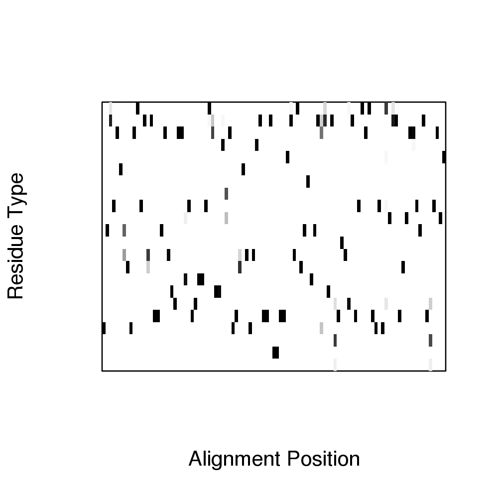
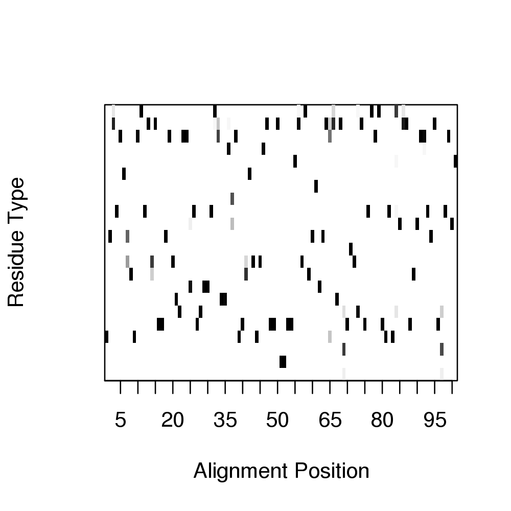
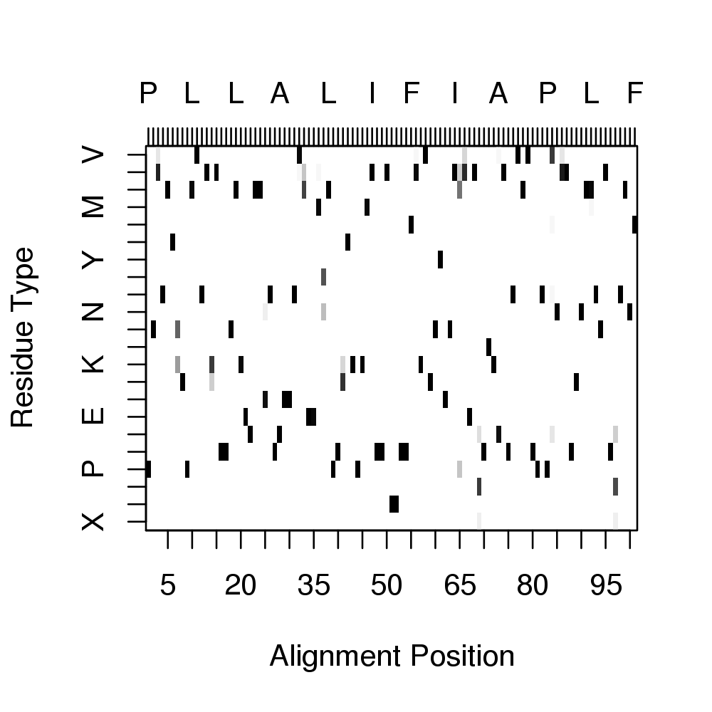
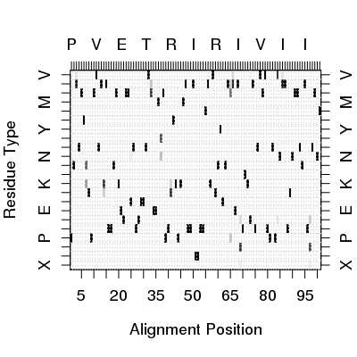
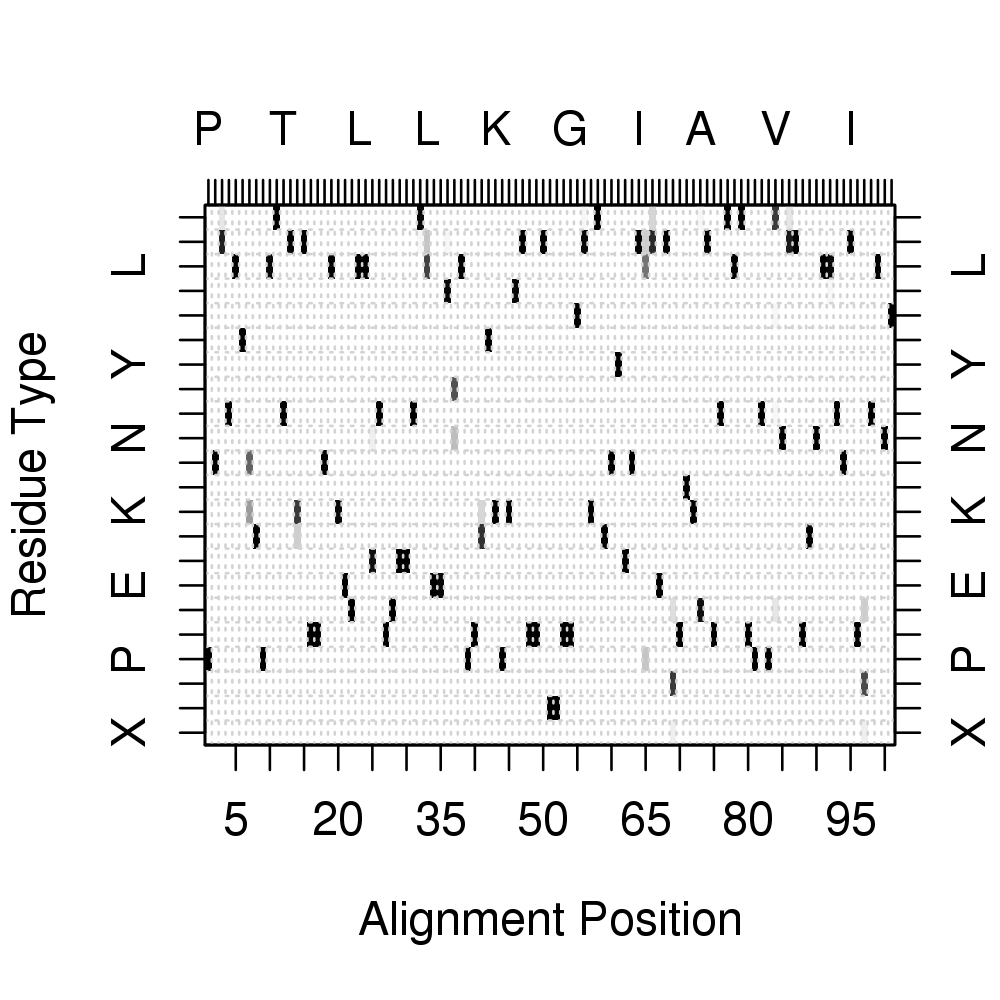
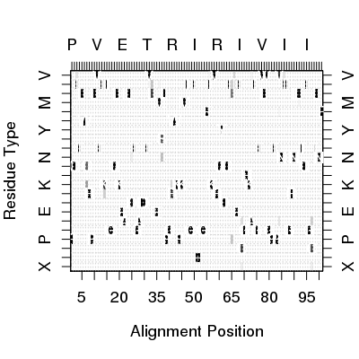
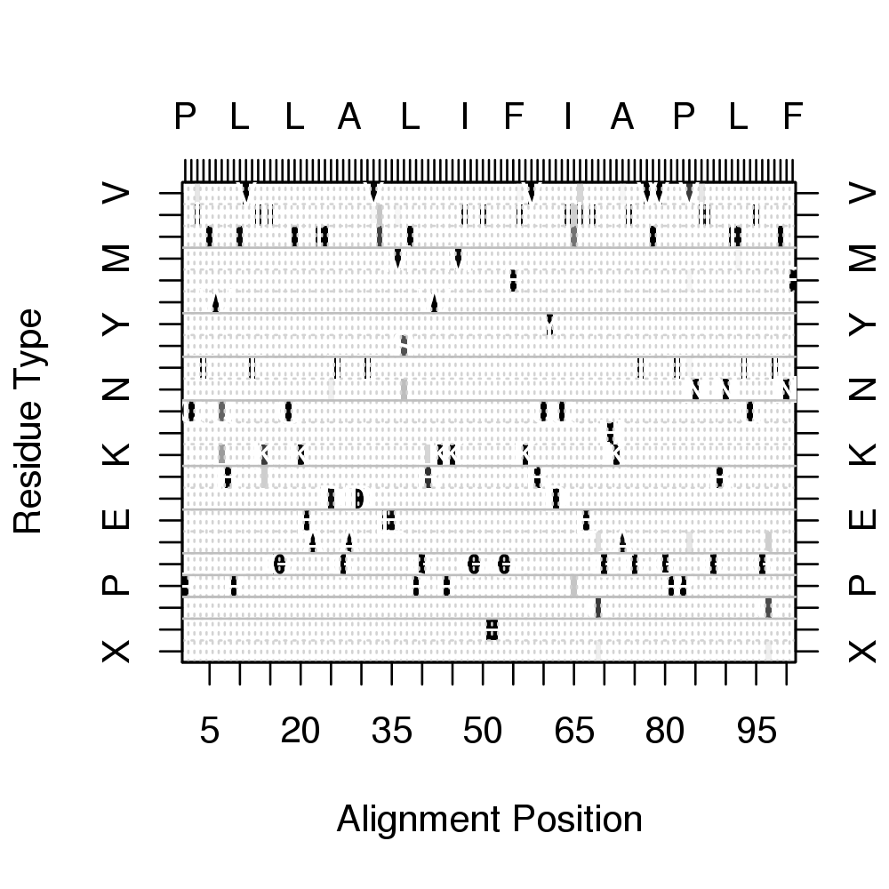

consensus(alignment, cutoff = 0.6)
alignment object created by the
read.fasta function or an alignment character matrix. Determines the consensus sequence for a given alignment at a given identity cutoff value.
A vector containing the consensus sequence, where ‘-’ represents
positions with no consensus (i.e. under the cutoff)
Grant, B.J. et al. (2006) Bioinformatics 22, 2695--2696.
#-- Read HIV protease alignment aln <- read.fasta(system.file("examples/hivp_xray.fa",package="bio3d")) # Generate consensus con <- consensus(aln) print(con$seq)[1] "P" "Q" "I" "T" "L" "W" "Q" "R" "P" "L" "V" "T" "I" "K" "I" "G" "G" "Q" [19] "L" "K" "E" "A" "L" "L" "D" "T" "G" "A" "D" "D" "T" "V" "L" "E" "E" "M" [37] "S" "L" "P" "G" "R" "W" "K" "P" "K" "M" "I" "G" "G" "I" "-" "-" "G" "G" [55] "F" "I" "K" "V" "R" "Q" "Y" "D" "Q" "I" "-" "I" "E" "I" "C" "G" "H" "K" [73] "A" "I" "G" "T" "V" "L" "V" "G" "P" "T" "P" "V" "N" "I" "I" "G" "R" "N" [91] "L" "L" "T" "Q" "I" "G" "C" "T" "L" "N" "F"# Plot residue frequency matrix ##png(filename = "freq.png", width = 1500, height = 780) col <- mono.colors(32) aa <- rev(rownames(con$freq)) image(x=1:ncol(con$freq), y=1:nrow(con$freq), z=as.matrix(rev(as.data.frame(t(con$freq)))), col=col, yaxt="n", xaxt="n", xlab="Alignment Position", ylab="Residue Type")
# Add consensus along the axis axis(side=1, at=seq(0,length(con$seq),by=5))
axis(side=2, at=c(1:22), labels=aa)axis(side=3, at=c(1:length(con$seq)), labels =con$seq)
axis(side=4, at=c(1:22), labels=aa)grid(length(con$seq), length(aa))
box()
# Add consensus sequence for(i in 1:length(con$seq)) { text(i, which(aa==con$seq[i]),con$seq[i],col="white") }
# Add lines for residue type separation abline(h=c(2.5,3.5, 4.5, 5.5, 3.5, 7.5, 9.5, 12.5, 14.5, 16.5, 19.5), col="gray")